아스텔라 제2부 · 외형·세부 컨셉이 다른 의례체 15안
다섯 스테이지마다 생김새와 세부 컨셉이 다른 인간형 의례체 세 안을 제작했습니다. 각 층의 기준 이미지는 가족성·화풍·인간 비율 참고이며 머리나 흉부를 그대로 고정하는 템플릿이 아닙니다. 각 안의 봉인머리, 흉부 구성, 외피와 핵심 기능 장치를 다르게 설계했습니다. 이미지를 누르면 1536 × 1024 원본 PNG가 열립니다.
Stage01 · 기억을 흘리는 정찰병
가족성 참고: Stage01 가족성·화풍·인간 비율 기준
기억 수집 / 감각 봉인 / 모래 분신 계측: 머리·흉부·기능 장치가 다른 세 안


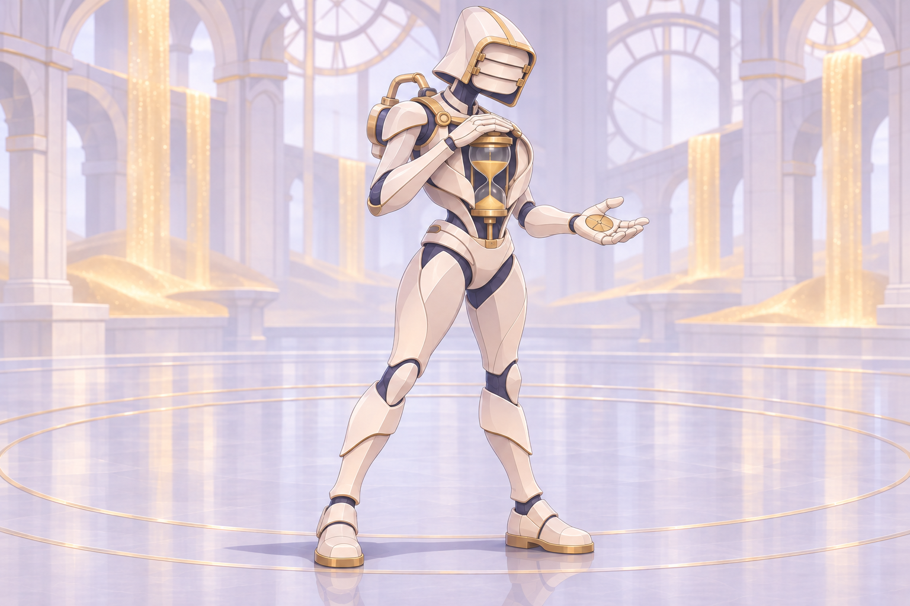

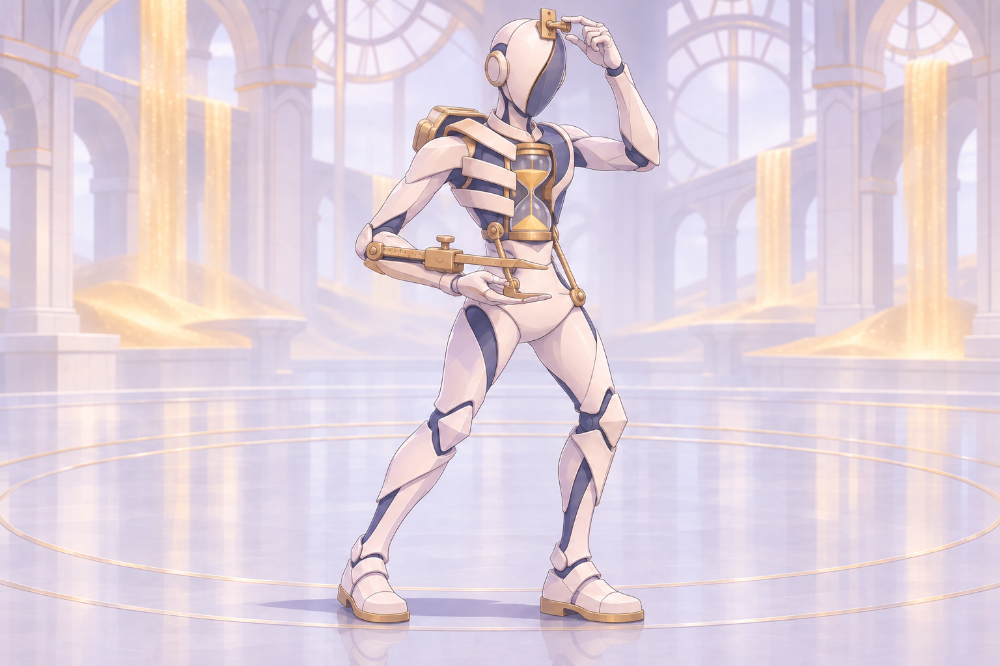

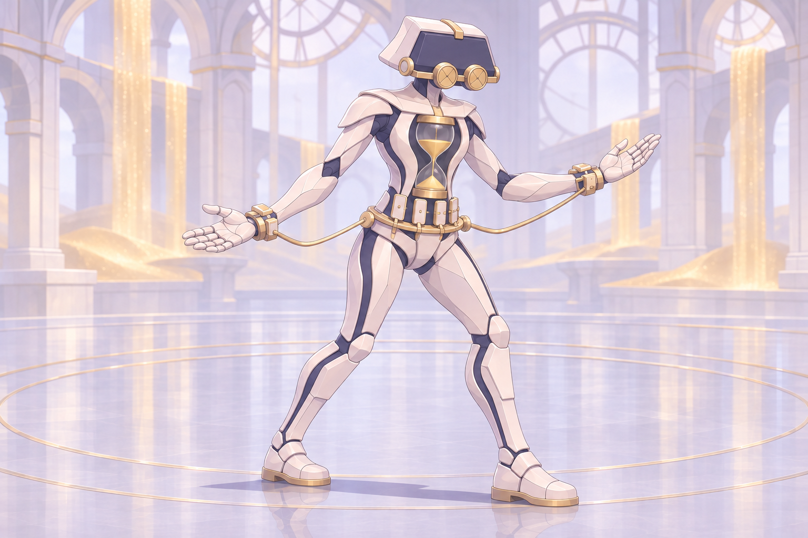
Stage02 · 끝나지 않는 진혼곡의 무희
가족성 참고: Stage02 가족성·화풍·인간 비율 기준
기존 다면체 머리·V흉부 반복을 피하고 장송 연주의 관 / 음판 / 공명종추로 차별화


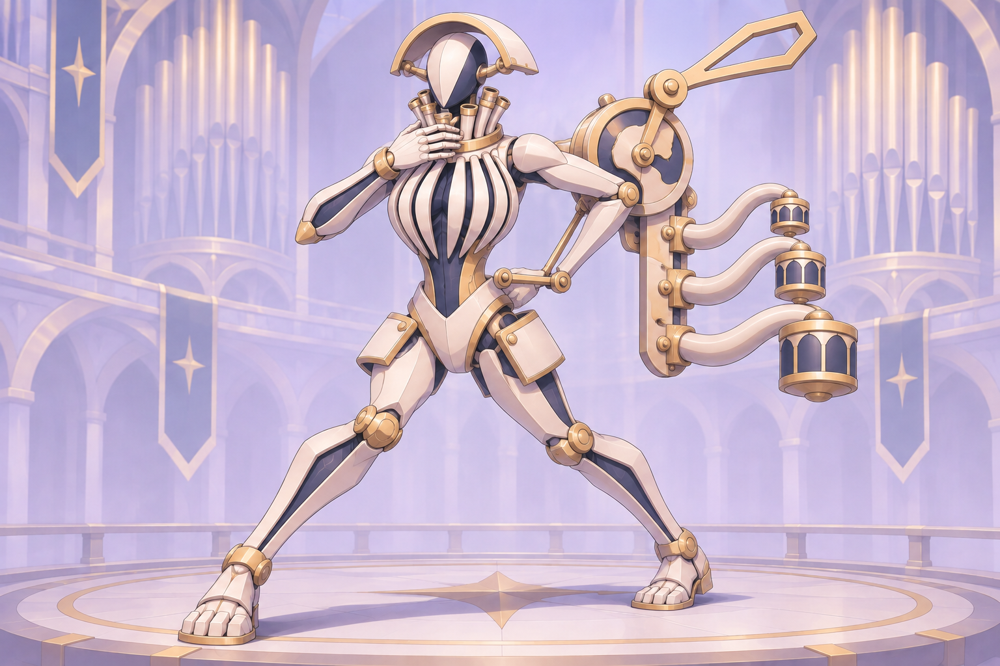

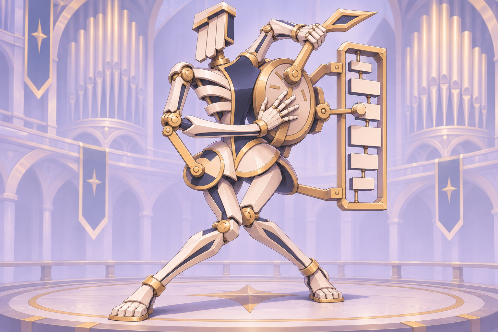

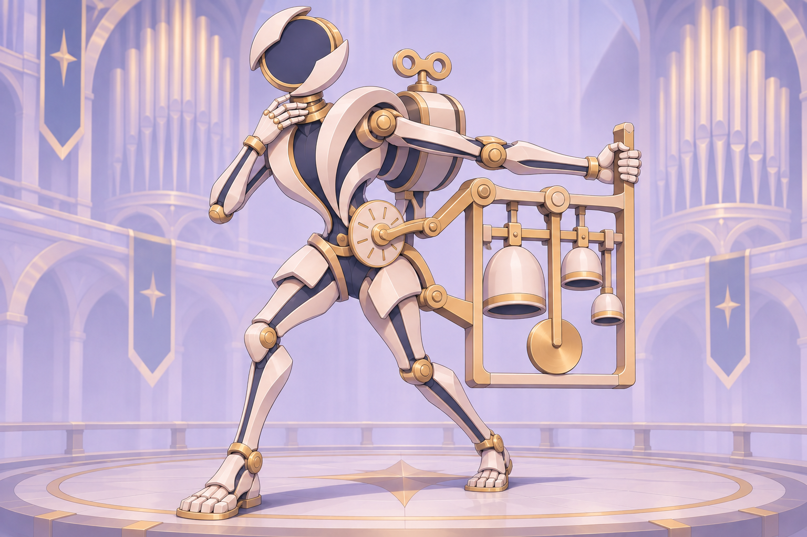
Stage03 · 얼어붙은 혈관의 연금술사
가족성 참고: Stage03 가족성·화풍·인간 비율 기준
수은 맥박 성유물 / 증류 응급치유 도구 / 생명저울: 수은 아티팩트를 명확한 기능 기관으로 강화


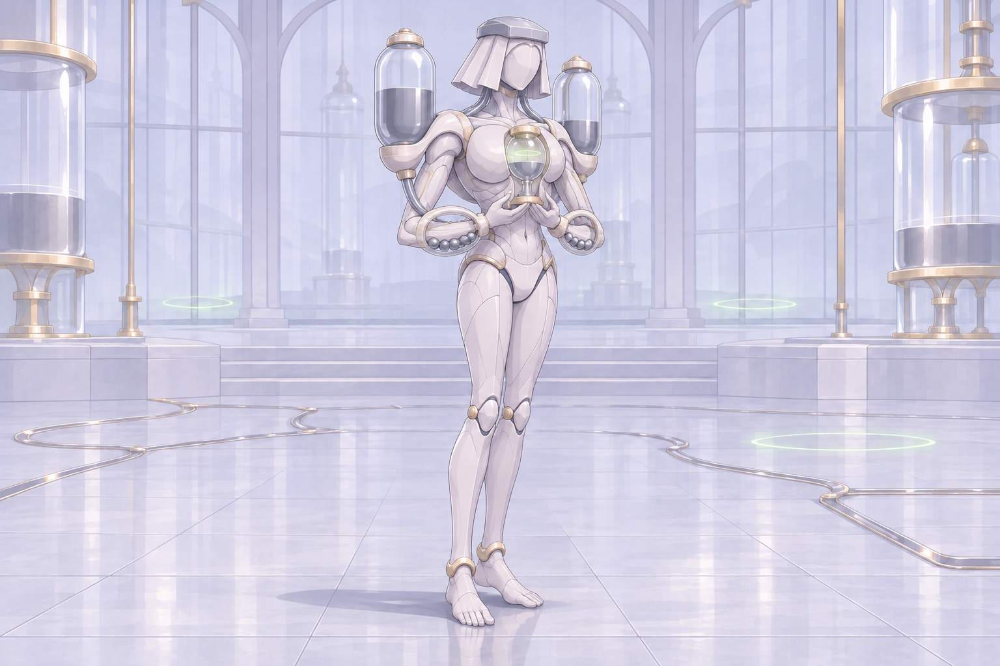

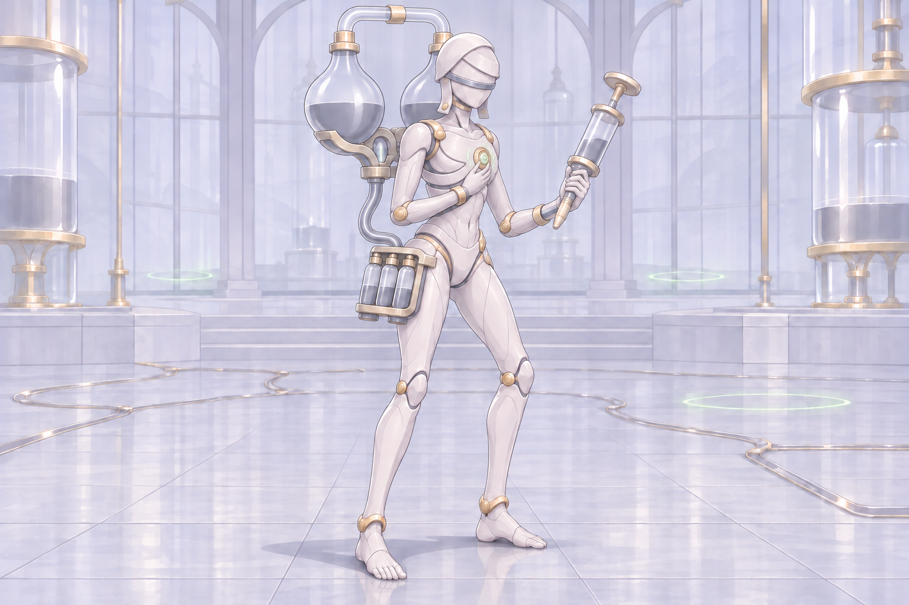

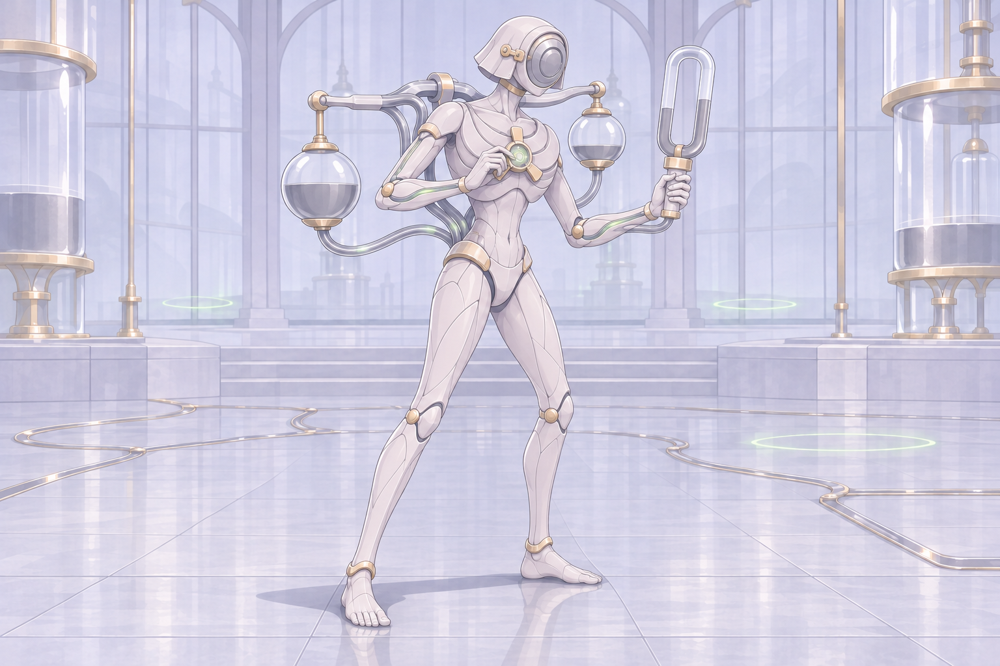
Stage04 · 영원히 타오르는 가마의 수호자
가족성 참고: Stage04 가족성·화풍·인간 비율 기준
어깨 뒤 가로축·롤러·기둥 삭제, 두꺼운 흉복갑과 큰 건틀릿의 인간형 탱커 세 안


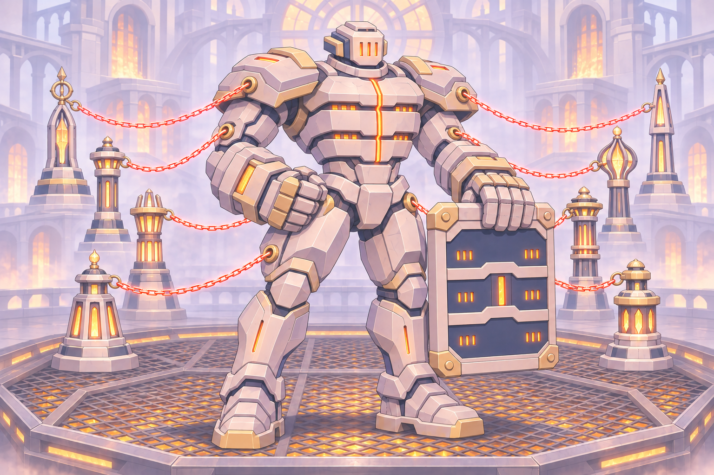

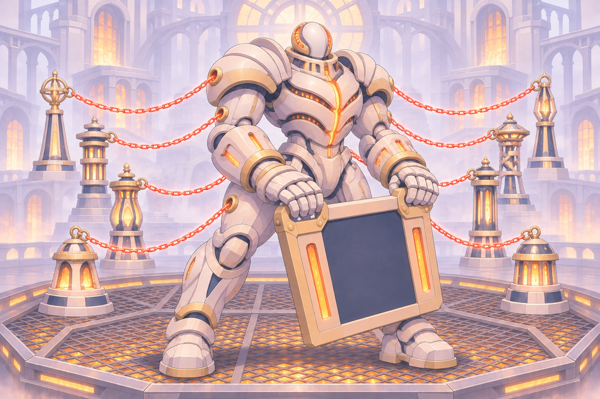

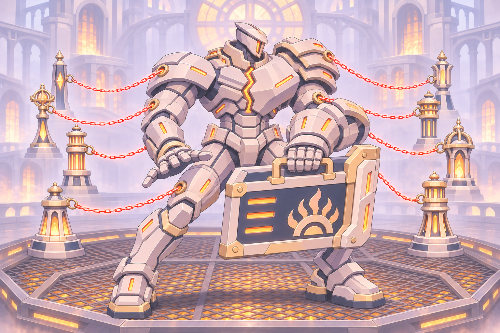
Stage05 · 무너진 천구를 떠받치는 부단장
가족성 참고: Stage05 가족성·화풍·인간 비율 기준
봉인 투구·흉갑·하중 외피를 다르게 설계하고 한어깨 천구와 원본 시침 창은 유지


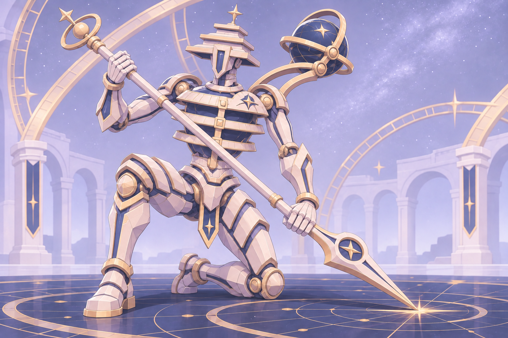

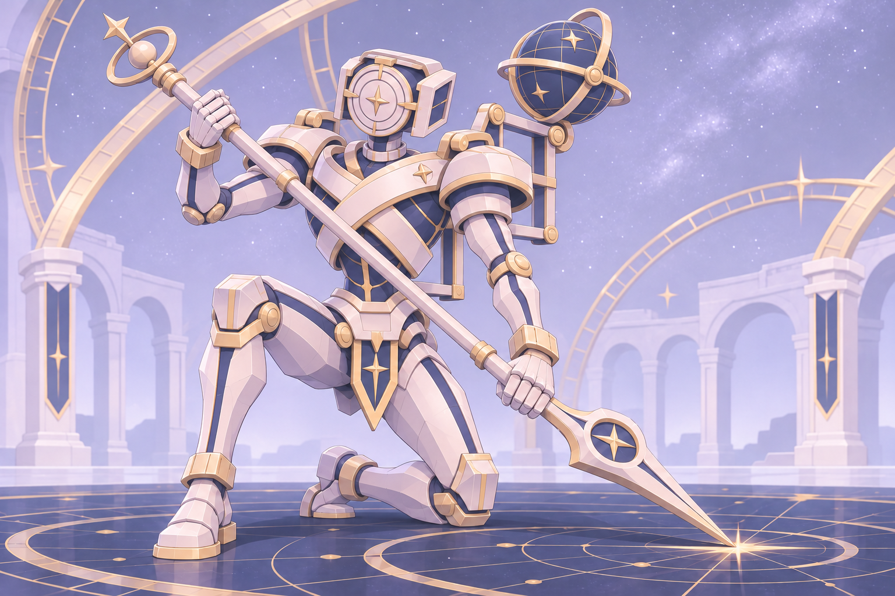

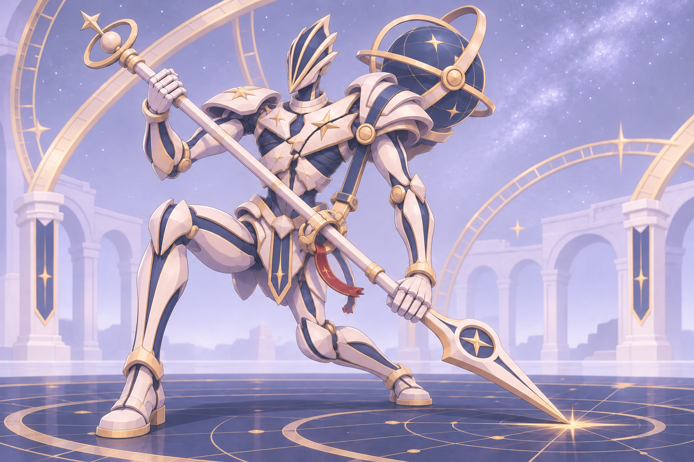
제작: 내장 image_gen. 단일 전신 컨셉샷이며 실제 3D 메시나 회전 렌더는 아닙니다. 전체 프롬프트 · 공통 아트 방향